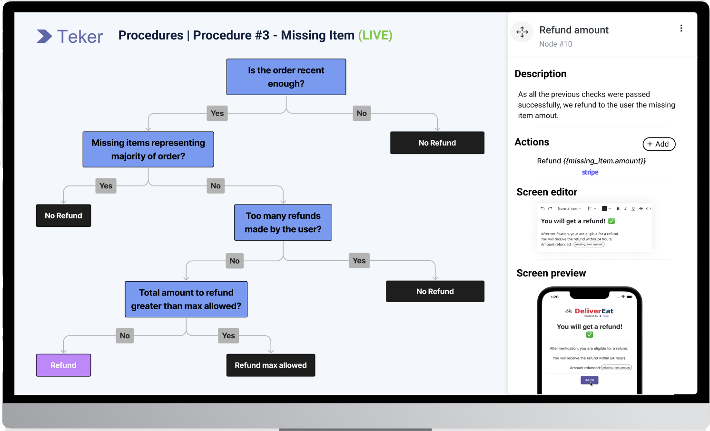

We started a company 3 months ago with the mission to help customer support teams automate their customer support with very little involvement from their engineering teams.
We failed to achieve that mission with our customers as we received the same answer from most of them:
"I would dream having that kind of solution but our engineering team is saying that we do not have the APIs to allow you to connect to our infrastructure and they don't have the time to support you on that project"As a result, these companies either decide to do it internally when customer service gets prioritized by engineering teams - which is rarely the case - or to postpone the project until later.
As customer support automations are a nightmare for engineers (cf. our last post), we have decided to work on a solution to support engineering teams in launching and maintaining customer support automations.
Below is a list of requirements we have identified that could allow engineers to save time and allow the customer service teams to free themselves from the need to have engineers to launch and maintain automations:
- Decision graph creation tool in a drag-and-drop mode to enable non-technical teams to create and modify the graphs on their own. 
- Decision engine which provides a mechanism to process and execute decision graphs. The decision engine executes a set of actions based on input information.
- Data connectors to collect the underlying data from various sources in an efficient manner. Developing data fetchers for every automation flow can quickly become a bottleneck for the engineering teams. That’s why we are developing the capability for flow authors to create and modify ‘data connectors’ on their own. Also, we provide multiple third party connectors (e.g Zendesk, Intercom, Hubspot) to avoid engineering teams the burden of developing and maintaining these connectors.
- Variables used across multiple automations. For example, if you are computing the same value again and again (e.g. amount to refund), it will avoid repetitive coding across multiple automations. It will also allow you to make a unique update when variable definitions are changing.
- Reusable library of actions that contains the actions that are being used across multiple decision graphs (e.g. reimbursement, create Salesforce / Zendesk ticket). It will avoid repetitive hard coding by the engineers of every decision node in the graph, and enable customer support teams to author and maintain these decision graphs.
- Testing process before releasing any workflow to production to ensure that workflows run as expected. We are developing a UI for simulating execution scenarios and saving them as test cases. It enables workflow authors to cover all resolution scenarios and validate the results before any release to production.
- Versioning which is required (i) to allow for variations in workflows depending on the country or language and (ii) to support the development lifecycle of an automation flow from Draft state, Shadow state, Final state to Live state.
- Analytics to gain better visibility into how customers respond to specific interactions. It will enable making data-driven decisions and continuously improve automation workflows.
- In-app: Buttons within the application or website that triggers automations allowing the user to solve his request autonomously
- Messaging: Non-real-time automation for support emails and in-app messages
- Chat: Real-time automation via chatbots
- Telephony & IVR: Real-time automation for inbound phone calls